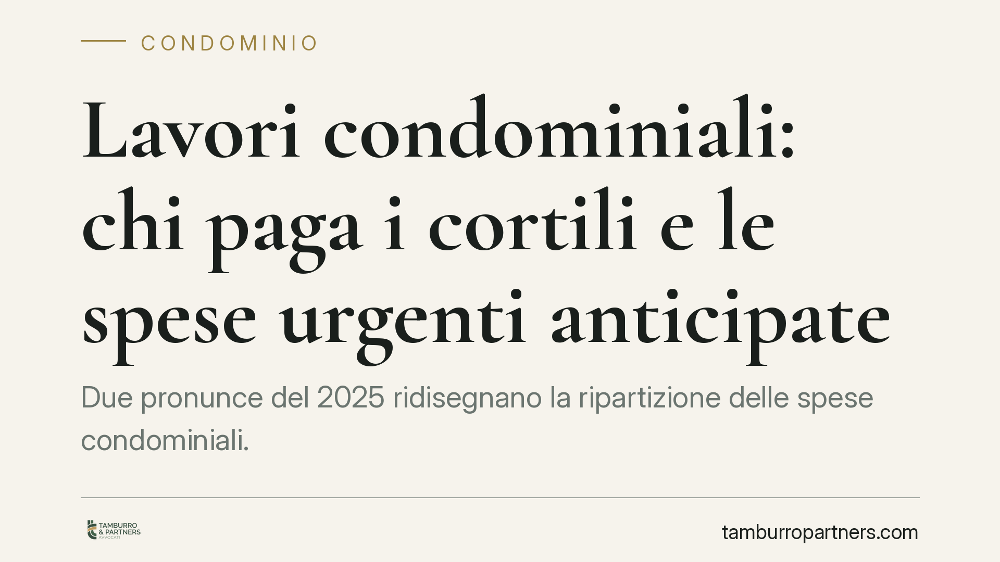

Lavori condominiali: chi paga i cortili e le spese urgenti anticipate
Due pronunce del 2025 ridisegnano la ripartizione delle spese condominiali. La Cassazione chiarisce come dividere i costi dei cortili posti sopra i box; il Tribunale di Santa Maria Capua Vetere delimita il rimborso al singolo condomino che anticipa lavori urgenti. Per proprietari e amministratori cambia il modo di impostare preventivi, delibere e richieste di rimborso.

Il contesto
Due decisioni recenti tornano su questioni che generano frequenti contrasti in assemblea: la ripartizione delle spese per i cortili che fungono anche da copertura dei box sottostanti e il diritto del singolo condomino a farsi rimborsare i lavori urgenti che ha anticipato di tasca propria.
La prima è l'ordinanza della Corte di Cassazione n. 16890/2025. La seconda è la sentenza del Tribunale di Santa Maria Capua Vetere n. 1665/2025. Entrambe muovono da norme del Codice Civile di uso quotidiano, ma spesso applicate in modo impreciso.
Inquadramento normativo
Il cortile sopra i box pone un problema tecnico: la stessa superficie è spazio di manovra o passaggio per alcuni e, al tempo stesso, copertura (soletta) dei locali sottostanti. La Cassazione, con l'ordinanza 16890/2025, afferma che in questo caso si applica l'art. 1125 c.c., dettato per i solai tra piani sovrapposti. La norma ripartisce le spese tra il proprietario del piano superiore e quello del piano inferiore in base all'uso: ciascuno sostiene il costo relativo alla parte che serve il proprio livello (ad esempio pavimentazione e manto superiore a carico di chi utilizza la superficie, struttura portante divisa a metà).
È un criterio diverso da quello dell'art. 1126 c.c. (lastrici solari a uso esclusivo, un terzo a chi usa, due terzi agli altri) e da quello generale dell'art. 1123 c.c. (riparto per millesimi o per uso). La scelta della norma giusta incide direttamente sugli importi.
Il Tribunale di Santa Maria Capua Vetere interviene invece sull'art. 1134 c.c. La norma riconosce al condomino che ha anticipato spese per la cosa comune il diritto al rimborso solo se la spesa era urgente, cioè non rinviabile senza pregiudizio, e tale da non consentire di attendere la decisione dell'assemblea. Fuori da questi limiti, chi agisce di propria iniziativa non ha diritto a essere rimborsato.
Implicazioni pratiche
Per i proprietari di box la pronuncia della Cassazione può tradursi in una redistribuzione dei costi di manutenzione del cortile sovrastante. Non sempre la spesa va divisa per millesimi generali: occorre verificare se la superficie funge da copertura e, in tal caso, applicare l'art. 1125 c.c.
Per l'amministratore, il tema è la correttezza del riparto. Una delibera che adotta il criterio sbagliato è esposta a impugnazione. Prima di approvare preventivi che coinvolgono cortili su box conviene far qualificare tecnicamente l'opera.
Per il singolo condomino che si trova davanti a un guasto o a un danno, la sentenza campana è un richiamo alla prudenza. L'anticipo delle spese senza i presupposti dell'urgenza rischia di restare a suo carico. Non basta ritenere il lavoro "necessario": serve dimostrare che non era possibile attendere l'assemblea.
Nel supercondominio, dove i cortili e gli spazi di risulta sono spesso comuni a più edifici, la corretta individuazione della norma applicabile diventa ancora più delicata, perché coinvolge una platea ampia di contitolari.
Cosa fare in concreto
- Qualificate la superficie prima di deliberare. Verificate con un tecnico se il cortile è anche copertura dei box: da questo dipende l'applicazione dell'art. 1125 c.c. anziché dell'art. 1123 c.c.
- Documentate l'urgenza. Se un condomino deve anticipare lavori, conservate foto, relazioni tecniche, comunicazioni all'amministratore e ogni prova che la spesa non fosse rinviabile.
- Avvisate sempre l'amministratore. Anche in caso di urgenza, informate tempestivamente l'amministratore e gli altri condomini: rafforza la posizione in un'eventuale richiesta di rimborso.
- Controllate il riparto in bilancio. Confrontate i criteri usati nel consuntivo con la natura effettiva delle parti comuni interessate.
- Impugnate nei termini. Una delibera con riparto errato va contestata entro trenta giorni dall'approvazione (o dalla comunicazione per gli assenti), ai sensi dell'art. 1137 c.c.
Consigliamo di far esaminare la singola fattispecie prima di assumere decisioni di spesa o avviare un contenzioso: la qualificazione delle parti comuni e la prova dell'urgenza sono elementi che si valutano caso per caso.
---
*Contributo informativo a cura di Tamburro & Partners - Avv. Giuseppe Tamburro. Non costituisce parere legale.*
Ogni condominio ha una storia a sé.
Se gestisci un'amministrazione e vuoi un confronto su una specifica questione condominiale, scrivi allo studio. Ti rispondiamo entro un giorno lavorativo.